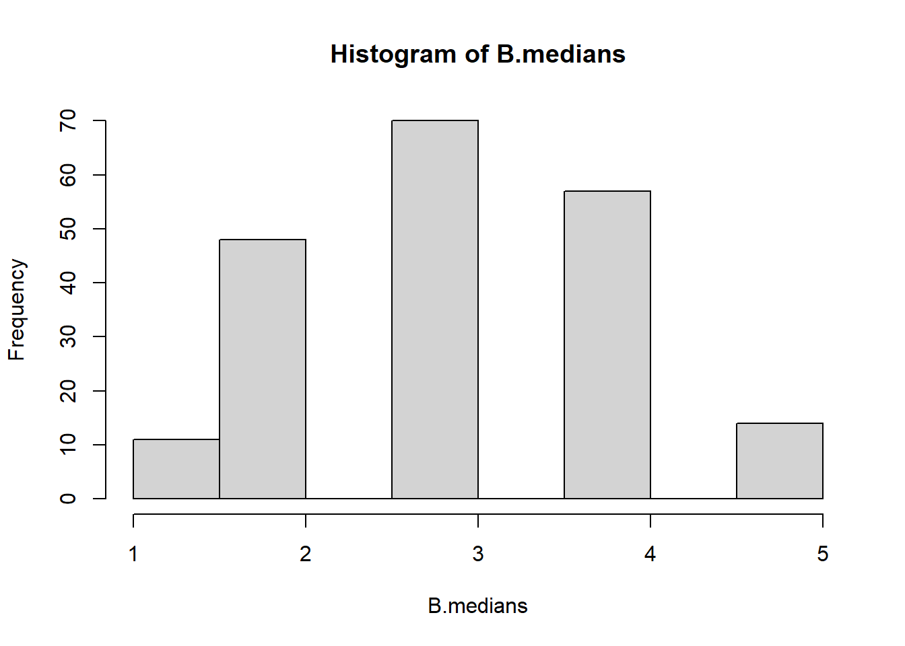

Bootstrap
The tutorial is on bootstrapping methods, mainly using R. Bootstrapping is a resampling technique used to estimate the sampling distribution of a statistic by repeatedly sampling, with replacement (after a data point is chosen randomly from the original dataset and included in the sample, it is “replaced” back into the original dataset, making it possible for that same data point to be picked again in the same sampling process), from the observed data points. It is a way to quantify the uncertainty associated with a given estimator or statistical measure, such as the mean, median, variance, or correlation coefficient, among others. Bootstrapping is widely applicable and very straightforward to implement, which has made it a popular choice for statistical inference when analytical solutions are not available or are difficult to derive.
Bootstrapping is a powerful statistical tool for making inferences by empirically estimating the sampling distribution of a statistic. It is especially useful when the underlying distribution is unknown or when an analytical solution is difficult to obtain.
Load data
Load the data saved at the end of previous part of the lab.
Resampling a vector
Here, the document introduces basic resampling of a simple vector. The code creates a new sample using the sample function with replacement. It also discusses “out-of-bag” samples which are the samples not chosen during the resampling.
The samples not selected are known as the out-of-bag samples
Calculating SD of a statistics
We introduce the concept of calculating confidence intervals (CIs) using bootstrapping when the distribution of data is not known. It uses resampling to create multiple bootstrap samples, then calculates means and standard deviations (SD) for those samples.
Idea:
- Not sure about what distribution is appropriate to make inference?
- If that is the case, calculating CI is hard.
- resample and get a new bootstrap sample
- calculate a statistic (say, mean) from that sample
- find SD of those statistic (say, means)
- Use those SD to calculate CI
mean(fake.data)
#> [1] 3
B <- 5
resamples <- lapply(1:B, function(i) sample(fake.data,
replace = TRUE))
str(resamples)
#> List of 5
#> $ : int [1:5] 4 2 5 5 2
#> $ : int [1:5] 2 4 3 2 2
#> $ : int [1:5] 3 3 4 4 4
#> $ : int [1:5] 5 3 4 5 2
#> $ : int [1:5] 3 2 1 2 5
B.means <- sapply(resamples, mean)
B.means
#> [1] 3.6 2.6 3.6 3.8 2.6
mean(B.means)
#> [1] 3.24
# SD of the distribution of means
sd(B.means)
#> [1] 0.5899152mean(fake.data)
#> [1] 3
B <- 200
resamples <- lapply(1:B, function(i) sample(fake.data,
replace = TRUE))
# str(resamples)
B.means <- sapply(resamples, mean)
B.medians <- sapply(resamples, median)
mean(B.means)
#> [1] 3.002
# SD of the distribution of means
sd(B.means)
#> [1] 0.6655908
mean(B.medians)
#> [1] 3.05
hist(B.means)

Resampling a data or matrix
We show how to resample a data frame or a matrix, and how to identify which rows have been selected and which haven’t, introducing the concept of “out-of-bag samples” for matrices.
| ID | gender | age | |
|---|---|---|---|
| 1 | 83732 | Male | 62 |
| 2 | 83733 | Male | 53 |
| 10 | 83741 | Male | 22 |
| 16 | 83747 | Male | 46 |
| 19 | 83750 | Male | 45 |
| 21 | 83752 | Female | 30 |
analytic.boot <- analytic.mini[sample(x = 1:nrow(analytic.mini),
size = nrow(analytic.mini),
replace = TRUE), ]
kable(analytic.boot[,1:3])| ID | gender | age | |
|---|---|---|---|
| 19 | 83750 | Male | 45 |
| 21 | 83752 | Female | 30 |
| 21.1 | 83752 | Female | 30 |
| 10 | 83741 | Male | 22 |
| 10.1 | 83741 | Male | 22 |
| 16 | 83747 | Male | 46 |
The caret package / boot
Usually B = 200 or 500 is recommended, but we will do 50 for the lab (to save time). We introduce the trainControl and train functions from the caret package. It sets up a linear model and demonstrates how bootstrapping can be done to estimate the variability in R-squared, a measure of goodness-of-fit for the model.
set.seed(234)
ctrl<-trainControl(method = "boot", number = 50)
fit4.boot2<-train(formula4, trControl = ctrl,
data = analytic3, method = "lm")
fit4.boot2
#> Linear Regression
#>
#> 2632 samples
#> 22 predictor
#>
#> No pre-processing
#> Resampling: Bootstrapped (50 reps)
#> Summary of sample sizes: 2632, 2632, 2632, 2632, 2632, 2632, ...
#> Resampling results:
#>
#> RMSE Rsquared MAE
#> 35.58231 0.22375 27.77634
#>
#> Tuning parameter 'intercept' was held constant at a value of TRUE
head(fit4.boot2$resample)Method boot632
A specific bootstrapping method called “boot632”, which aims to reduce bias but can provide unstable results if the sample size is small. Compared to the original bootstrap method, boot632 addresses the bias that is due to this the sampling with replacement.
See Raschka (2023)
ctrl<-trainControl(method = "boot632", number = 50)
fit4.boot2b<-train(formula4, trControl = ctrl,
data = analytic3, method = "lm")
fit4.boot2b
#> Linear Regression
#>
#> 2632 samples
#> 22 predictor
#>
#> No pre-processing
#> Resampling: Bootstrapped (50 reps)
#> Summary of sample sizes: 2632, 2632, 2632, 2632, 2632, 2632, ...
#> Resampling results:
#>
#> RMSE Rsquared MAE
#> 35.33279 0.2277843 27.58945
#>
#> Tuning parameter 'intercept' was held constant at a value of TRUE
head(fit4.boot2b$resample)Method boot632 for stepwise
We discuss the use of stepwise regression models in conjunction with the “boot632” method. It highlights the trade-offs and explains that models could be unstable depending on the data.
A stable model
See Kuhn (2023)
Bias is reduced with 632 bootstrap, but may provide unstable results with a small samples size.
ctrl <- trainControl(method = "boot632", number = 50)
fit4.boot2b<-train(formula4, trControl = ctrl,
data = analytic3, method = "lmStepAIC",
trace = 0)
fit4.boot2b
#> Linear Regression with Stepwise Selection
#>
#> 2632 samples
#> 22 predictor
#>
#> No pre-processing
#> Resampling: Bootstrapped (50 reps)
#> Summary of sample sizes: 2632, 2632, 2632, 2632, 2632, 2632, ...
#> Resampling results:
#>
#> RMSE Rsquared MAE
#> 35.34494 0.2293058 27.65063
head(fit4.boot2b$resample)An unstable model
ctrl<-trainControl(method = "boot632", number = 50)
# formula3 includes collinear variables
fit4.boot2b<-train(formula3, trControl = ctrl,
data = analytic3, method = "lmStepAIC",
trace = 0)
fit4.boot2b
#> Linear Regression with Stepwise Selection
#>
#> 2632 samples
#> 25 predictor
#>
#> No pre-processing
#> Resampling: Bootstrapped (50 reps)
#> Summary of sample sizes: 2632, 2632, 2632, 2632, 2632, 2632, ...
#> Resampling results:
#>
#> RMSE Rsquared MAE
#> 35.39802 0.2287758 27.6471
head(fit4.boot2b$resample)Note that SD should be higher for larger B.
Optimism corrected bootstrap
We discuss a specific type of bootstrap called the “Optimism corrected bootstrap”. It’s a way to adjust performance metrics for the optimism that is often present when a model is tested on the data used to create it.
See Bondarenko and Consulting (2023)
Steps:
- Fit a model M to entire data D and estimate predictive ability R2.
- Iterate from b=1 to B:
- Take a resample from the original data, and name it D.star
- Fit the bootstrap model M.stat to D.star and get predictive ability, R2.boot
- Use the bootstrap model M.star to get predictive ability on D, R2.fullData
- Optimism Opt is calculated as mean(R2.boot - R2.fullData)
- Calculate optimism corrected performance as R2-Opt.
R2.opt <- function(data, fit, B, y.name = "cholesterol"){
D <- data
y.index <- which(names(D)==y.name)
# M is the model fit to entire data D
M <- fit
pred.y <- predict(M, D)
n <- length(pred.y)
y <- as.numeric(D[,y.index])
# estimate predictive ability R2.
R2.app <- caret:::R2(pred.y, y)
# create blank vectors to save results
R2.boot <- vector (mode = "numeric", length = B)
R2.fullData <- vector (mode = "numeric", length = B)
opt <- vector (mode = "numeric", length = B)
# Iterate from b=1 to B
for(i in 1:B){
# Take a resample from the original data, and name it D.star
boot.index <- sample(x=rownames(D), size=nrow(D), replace=TRUE)
D.star <- D[boot.index,]
M.star <- lm(formula(M), data = D.star)
# Fit the bootstrap model M.stat to D.star and get predictive ability, R2.boot
D.star$pred.y <- predict(M.star, new.data = D.star)
y.index <- which(names(D.star)==y.name)
D.star$y <- as.numeric(D.star[,y.index])
R2.boot[i] <- caret:::R2(D.star$pred.y, D.star$y)
# Use the bootstrap model M.star to get predictive ability on D, R2_fullData
D$pred.y <- predict(M.star, newdata=D)
R2.fullData[i] <- caret:::R2(D$pred.y, y)
# Optimism Opt is calculated as R2.boot - R2.fullData
opt[i] <- R2.boot[i] - R2.fullData[i]
}
boot.res <- round(cbind(R2.boot, R2.fullData,opt),2)
# Calculate optimism corrected performance as R2- mean(Opt).
R2.oc <- R2.app - (sum(opt)/B)
return(list(R2.oc=R2.oc,R2.app=R2.app, boot.res = boot.res))
}
R2x <- R2.opt(data = analytic3, fit4, B=50)
R2x
#> $R2.oc
#> [1] 0.2238703
#>
#> $R2.app
#> [1] 0.2415378
#>
#> $boot.res
#> R2.boot R2.fullData opt
#> [1,] 0.23 0.24 -0.01
#> [2,] 0.24 0.23 0.01
#> [3,] 0.26 0.24 0.03
#> [4,] 0.25 0.23 0.02
#> [5,] 0.26 0.24 0.02
#> [6,] 0.26 0.23 0.03
#> [7,] 0.21 0.24 -0.03
#> [8,] 0.25 0.23 0.02
#> [9,] 0.24 0.23 0.01
#> [10,] 0.27 0.23 0.03
#> [11,] 0.25 0.23 0.01
#> [12,] 0.24 0.23 0.01
#> [13,] 0.26 0.23 0.03
#> [14,] 0.25 0.24 0.02
#> [15,] 0.25 0.23 0.02
#> [16,] 0.24 0.23 0.00
#> [17,] 0.25 0.23 0.02
#> [18,] 0.26 0.24 0.03
#> [19,] 0.24 0.24 0.01
#> [20,] 0.27 0.24 0.03
#> [21,] 0.27 0.24 0.04
#> [22,] 0.26 0.23 0.02
#> [23,] 0.23 0.23 0.00
#> [24,] 0.23 0.23 0.00
#> [25,] 0.26 0.23 0.03
#> [26,] 0.26 0.23 0.03
#> [27,] 0.27 0.23 0.04
#> [28,] 0.27 0.24 0.03
#> [29,] 0.27 0.23 0.04
#> [30,] 0.24 0.23 0.00
#> [31,] 0.25 0.23 0.02
#> [32,] 0.25 0.24 0.02
#> [33,] 0.26 0.24 0.02
#> [34,] 0.23 0.24 0.00
#> [35,] 0.25 0.23 0.02
#> [36,] 0.26 0.23 0.03
#> [37,] 0.26 0.23 0.03
#> [38,] 0.23 0.24 0.00
#> [39,] 0.26 0.23 0.03
#> [40,] 0.27 0.23 0.03
#> [41,] 0.24 0.23 0.01
#> [42,] 0.24 0.24 0.00
#> [43,] 0.28 0.23 0.04
#> [44,] 0.25 0.24 0.02
#> [45,] 0.25 0.23 0.02
#> [46,] 0.26 0.24 0.02
#> [47,] 0.25 0.23 0.02
#> [48,] 0.25 0.23 0.02
#> [49,] 0.25 0.24 0.02
#> [50,] 0.23 0.23 -0.01Binary outcome
Here, bootstrapping and cross-validation are used for a logistic regression model. It calculates the Area Under the Receiver Operating Characteristic Curve (AUC-ROC), a measure for the performance of classification models.
AUC from Receiver Operating Characteristic (ROC) = Measure of accuracy for classification models.
AUC = 1 (perfect classification)
AUC = 0.5 (random classification such as a coin toss)
set.seed(234)
formula5
#> cholesterol.bin ~ gender + age + born + race + education + married +
#> income + diastolicBP + systolicBP + bmi + triglycerides +
#> uric.acid + protein + bilirubin + phosphorus + sodium + potassium +
#> globulin + calcium + physical.work + physical.recreational +
#> diabetes
# Bootstrap
ctrl<-trainControl(method = "boot",
number = 50,
classProbs=TRUE,
summaryFunction = twoClassSummary)
fit5.boot<-caret::train(formula5,
trControl = ctrl,
data = analytic3,
method = "glm",
family="binomial",
metric="ROC")
fit5.boot
#> Generalized Linear Model
#>
#> 2632 samples
#> 22 predictor
#> 2 classes: 'unhealthy', 'healthy'
#>
#> No pre-processing
#> Resampling: Bootstrapped (50 reps)
#> Summary of sample sizes: 2632, 2632, 2632, 2632, 2632, 2632, ...
#> Resampling results:
#>
#> ROC Sens Spec
#> 0.7238856 0.4563417 0.8201976
mean(fit5.boot$resample$ROC)
#> [1] 0.7238856
sd(fit5.boot$resample$ROC)
#> [1] 0.01166374
# CV
ctrl <- trainControl(method = "cv",
number = 5,
classProbs = TRUE,
summaryFunction = twoClassSummary)
fit5.cv <- train(formula5,
trControl = ctrl,
data = analytic3,
method = "glm",
family="binomial",
metric="ROC")
fit5.cv
#> Generalized Linear Model
#>
#> 2632 samples
#> 22 predictor
#> 2 classes: 'unhealthy', 'healthy'
#>
#> No pre-processing
#> Resampling: Cross-Validated (5 fold)
#> Summary of sample sizes: 2106, 2106, 2105, 2105, 2106
#> Resampling results:
#>
#> ROC Sens Spec
#> 0.7291594 0.4512144 0.8253358
fit5.cv$resampleBrier Score is another metric for evaluating the performance of binary classification models. Brier Score is equivalent to the mean squared error, which we calculate for a continuous outcome. A Brier score of 0 indicates perfect accuracy and a score of 1 indicates perfect inaccuracy.
Video content (optional)
For those who prefer a video walkthrough, feel free to watch the video below, which offers a description of an earlier version of the above content.